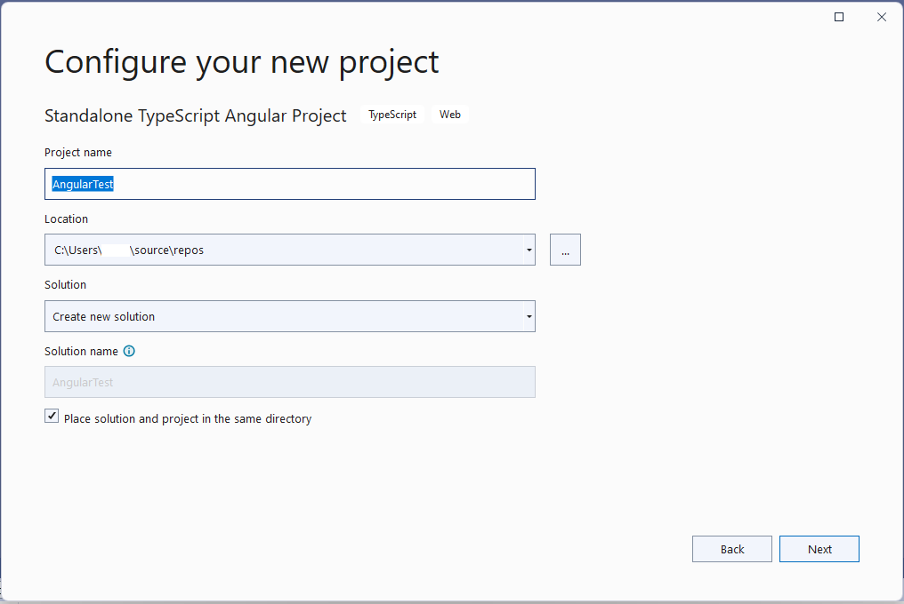
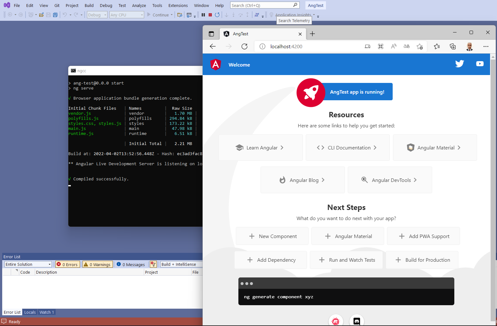

AngularTest Projesi
Son projem Angular platformunda soru bankası ve test oluşturacak bir uygulamadır.
Aşağıda bu projeyi oluştururken izlediğim adımları açıklayacağım.
Ön Hazırlıklar
Bilgisayarınızda henüz Angular kurulumu yapmadıysanız,
öncelikle node.js ve npm kurulumu yapmış olmalısınız.
-
Windows ortamında çalışıyorsanız,
https://nodejs.org/en/download/
sitesinden en son kurulum dosyasını
indirip kurulum yapınız.
Bundan sonra, Windows komut penceresinde
(cmd)
veya yönetici yetkisiyle açacağınız
bir Powershell penceresinde
npm install -g @angular/cli
komutunu çalıştırarak Angular kurulumunu yapabilirsiniz.
-
Powershell kullanacaksanız,
(daha önce yapmadıysanız)
Set-ExecutionPolicy RemoteSigned
komutuyla kendinize
skript çalıştırma izni vermeniz gerekebilir.
-
Linux ortamında çalışıyorsanız,
paket yöneticisiyle kuracağınız node.js ve npm
eski bir sürüm olabileceği için,
Angular kurmaya kalktığınızda hata mesajıyla karşılaşabilirsiniz.
Böyle bir durumda ya node.js ve npm sürümlerinizi yenilemek,
ya da paket yöneticisine başka kaynaklar ekleyip
oradan son sürümleri kurmak yoluna gidebilirsiniz.
Bir başka yol da nvm
paketini kurup, onun aracılığıyla
son node.js ve npm sürümlerini kurmaktır.
Projeyi Oluşturmak
Bu projenin bazı aşamalarında Angular CLI (komut arabirimi) kullanacağım,
ama projeyi onunla oluşturmadım.
Visual Studio ortamını proje organizasyonunu gözden kaçırmadan
kod dosyalarını düzenlemek için kullanacağım.

Proje şablonu olarak, Web platformu kategorisinden
Standalone Angular şablonunu seçiyoruz.
Projeyi Çalıştırmak

Proje Angular CLI ortamındaki gibi oluşturulacaktır.
Projeyi çalıştırdığımızda geri plandaki komut penceresinden
"ng serve" komutu çalıştırılmış gibi sunucu devreye girecek
ve Angular projelerinde gördüğümüz geçici şablon görüntülenecektir.